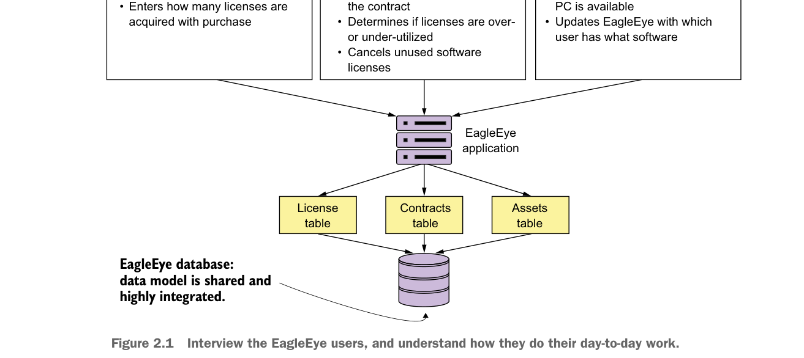
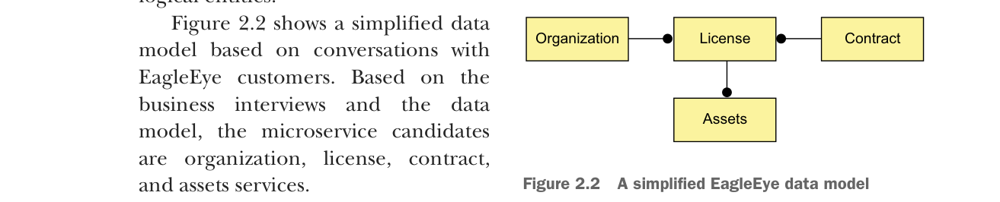

Phỏng vấn người dùng EagleEye và tìm hiểu cách họ làm việc hàng ngày.
Bạn sẽ bắt đầu bằng cách phỏng vấn tất cả người dùng của ứng dụng EagleEye và thảo luận với họ về cách họ tương tác và sử dụng EagleEye. Hình 2.1 tóm tắt các cuộc trò chuyện bạn có thể có với các khách hàng nghiệp vụ khác nhau. Bằng cách quan sát cách người dùng EagleEye tương tác với ứng dụng và cách mô hình dữ liệu của ứng dụng được phân tách, bạn có thể phân rã miền nghiệp vụ EagleEye thành các ứng viên microservice sau đây.
Trong hình, tôi đã đánh dấu một số danh từ và động từ xuất hiện trong các cuộc trò chuyện với người dùng nghiệp vụ. Vì đây là một ứng dụng hiện có, bạn có thể xem xét ứng dụng và ánh xạ các danh từ chính trở lại các bảng trong mô hình dữ liệu vật lý. Một ứng dụng hiện có có thể có hàng trăm bảng, nhưng mỗi bảng thường ánh xạ trở lại một tập hợp thực thể logic duy nhất.

Một mô hình dữ liệu EagleEye đơn giản hóa
Hình 2.2 trình bày một mô hình dữ liệu đơn giản hóa dựa trên các cuộc trò chuyện với khách hàng EagleEye. Dựa trên các cuộc phỏng vấn nghiệp vụ và mô hình dữ liệu, các ứng viên microservice là organization, license, contract và assets services.